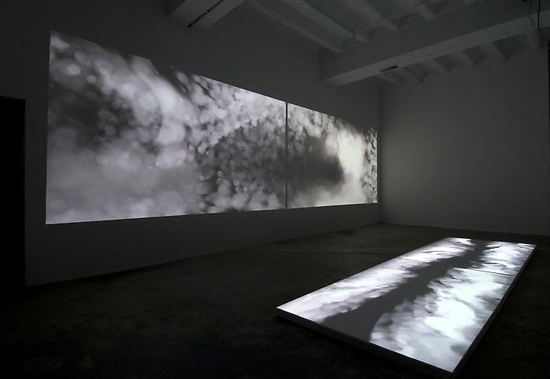

Brandon Morse
Brandon Morse

Brandon Morse is a Digital Art prefessor at the University of Maryland. He earned a Masters in Art and Technology at Ohio University. He has been a professor at Maryland since 2000 and has had his art diplayed at galleries across the world in Europe, Asia, and the United States.
He is based in Washington DC, and he works with generative systems to portray physical phenomena in metaphorical and poetic ways. He combines code with his own custom computer software to create his art. In his work, he attempts to portray how systems work and how we navigate the world around us through large scale instalations. In his 'digital demolitions,' as they are called in an articel by Art in America, he designs the pattern of the collapsing structures by creating his own system rules to dictate the collapsing motion.